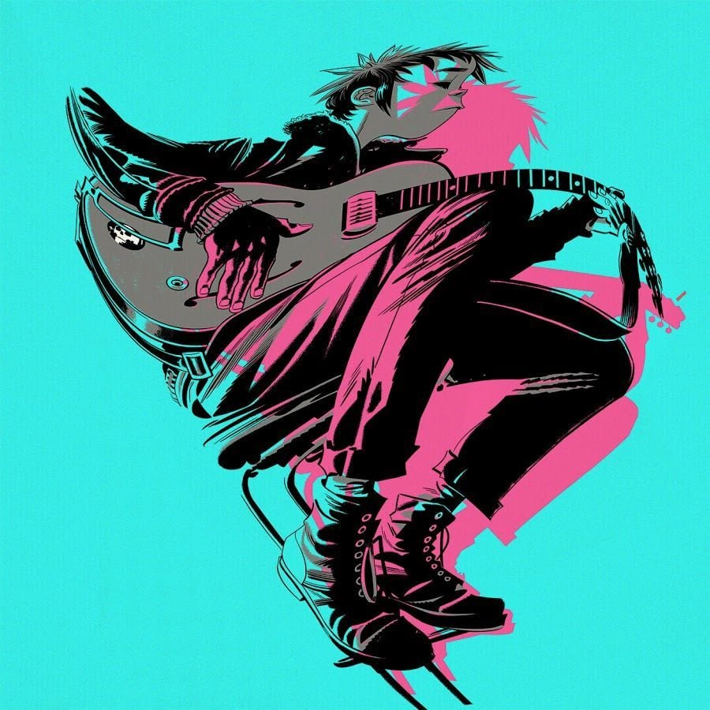

Sorry I Am Late
The Blaze

Pasaste 30 minutos escuchando esta canción.
Time Flies
Drake

Pasaste 79 minutos escuchando esta canción.
Fire Flies
Gorillaz

Pasaste 115 minutos escuchando esta canción.
Cello Sonata No.1
Bernhard Romberg

Pasaste 72 minutos escuchando esta canción.
Mi Confesión
Gothan Project

Pasaste 56 minutos escuchando esta canción.